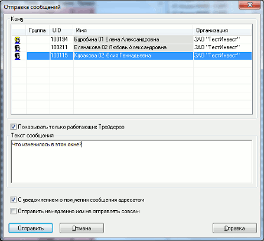

Вызов окна отправки сообщения осуществляется из пункта меню
Действия/Отправить сообщения, либо из аналогичного пункта в контекстном меню, вызванном из таблицы «Окно сообщений Трейдера».
 В рамке «Кому» выберите адресата из списка доступных, в поле
«Текст сообщения» наберите текст и нажмите кнопку «Отправить». Список адресатов можно сортировать нажатием левой кнопки мыши на
заголовке столбца. Повторное нажатие; меняет порядок сортировки на
обратный. Двойным нажатием левой кнопки мыши на строке в Окне сообщений открывается
окно отправки сообщения, содержащее его текст и выбранного адресата в поле
«Кому». Используйте этот способ для ответа на полученное сообщение. Текст сообщения выделен сразу, и если начинать ввод текста без снятия
выделения, то он исчезнет и освободит место для Вашего сообщения. Если нужно
использовать этот текст в качестве цитаты, то снимите выделение нажатием левой
кнопки мыши и отредактируйте текст.
Команда контекстного меню
Комбинация клавиш
Операция редактирования текста
Вырезать
«Сtrl»+«X»
Вырезать выделенный фрагмент текста с копированием в буфер
обмена
Копировать
«Сtrl»+«С»
Копировать выделенный фрагмент текста в буфер обмена
Вставить
«Сtrl»+«V»
Вставить содержимое буфера обмена
Удалить
«Del»
Удалить выделенный фрагмент текста
Выделить все
Выделить весь текст
Если получатель Вашего сообщения в момент его отправки подключен к серверу (активный пользователь), тогда он получает сообщение сразу. Если получатель не соединен с сервером (неактивный пользователь), то он получает сообщение только после установки соединения.
Список получателей в Окне отправки сообщений содержит полный перечень пользователей, которым можно отправить сообщение. При этом активные пользователи отмечены слева черным значком , неактивные – серым, текущий пользователь – желтым.
Для отправки одинакового сообщения нескольким адресатам введено понятие группы пользователей. Группа пользователей создается администратором сервера QUIK. Название группы отображается в столбце «Группа». Выделение всей группы осуществляется двойным нажатием левой кнопки мыши на одном из членов группы.
Настройки окна сообщения действительны для всех последующих сообщений.
См. также Окно сообщений трейдера.